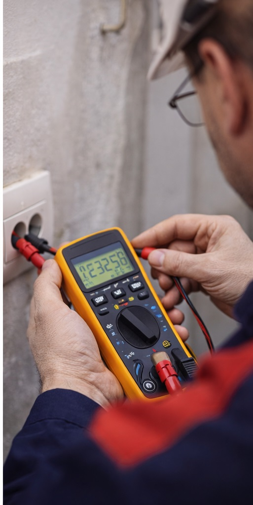

Szolgáltatásaink
- ⚡ Villanyszerelés (lakossági és ipari)
- 🔥 Apríték tüzelésű kazánok javítása
- 🤖 Automatizálás
- 🧠 PLC programozás
- 🛡️ Villamos biztonsági felülvizsgálat
Referenciák

Szervizautó és felszerelés
Mindig teljes felszereléssel érkezünk.
Kapcsolószekrény
Ipari és lakossági vezérlések.

Mérés és ellenőrzés
Pontos diagnosztika, jegyzőkönyvvel.
⚡ Lakossági hibaelhárítás
Gyors kiszállás, FI-relé/biztosíték hibák, hálózatjavítás. Pest megyében.
🧠 PLC módosítás / optimalizálás
Ipari vezérlés finomhangolás, hibakeresés, üzembe helyezés, dokumentálás.
🔥 Kazán automatika javítás
Apríték tüzelésű kazán vezérlés, érzékelők, motorok, működés stabilizálás.
Szeretnél ide konkrét referenciát? Írd meg 3–5 munkád röviden (helyszín település + mi volt a feladat), és beírom szépen.
Miért minket válasszon?
- Gyors reagálás
- Rendszerszemlélet
- Dokumentált munkavégzés
- Lakossági és ipari tapasztalat